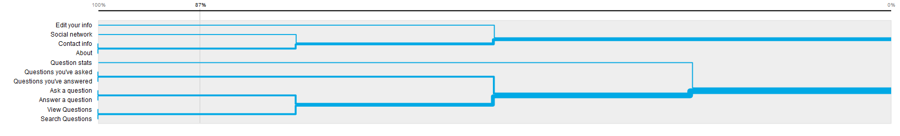
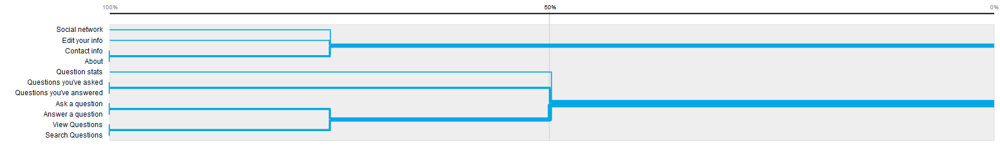

The results of the card sorting for this hypothetical site was more grouped and similar than I would have thought it would have been. Most of the participants in the study agreed on a large portion of the cards and the groups in which they belonged.
The above graph also looks very similar in terms of where the branches are. There are some small discrepancies, but the general idea of where to put the information is expressed pretty well in both graphs.
Check out the analysis of the card sorting I did for the website Foldable.me!